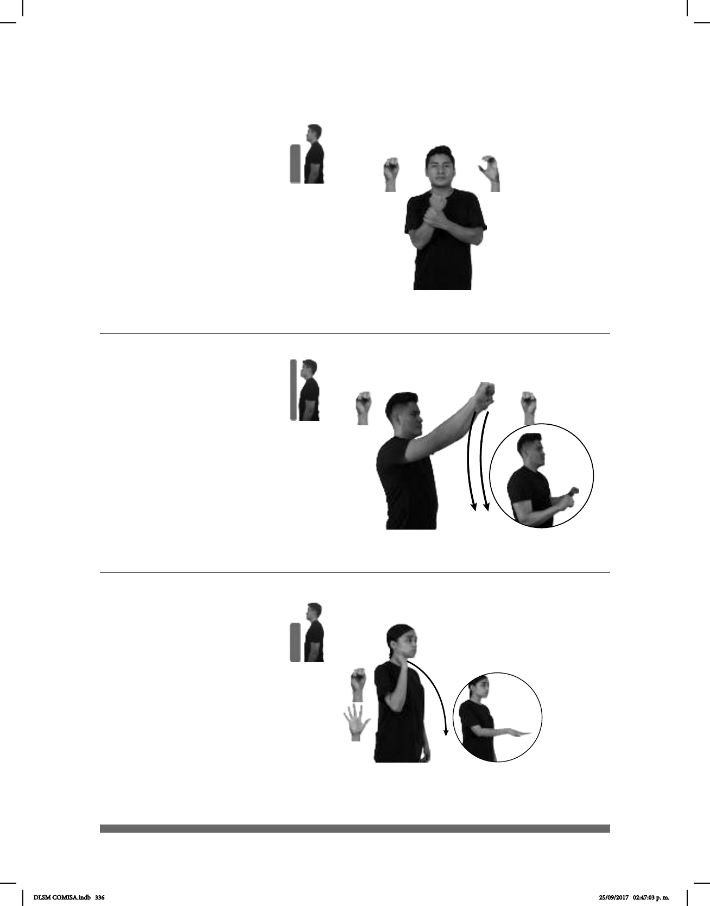

336
Seña: SB
MD S.1, MB C.7
MD y MB palmas
hacia adentro.
A la altura del pecho.
MB sostiene la muñeca de MD.
Estación del Metro de
la Ciudad de México perteneciente
a la línea B.
____muy
TEPITO LUGAR FAMOSO
Tepito es un lugar muy conocido.
(S-127)
(S-128)
Seña: SS
S.1
Palmas oblicuas hacia
abajo y hacia afuera.
: I. De la cabeza al estómago.
Las manos se mueven
formando un arco.
sust. f. Establecimiento
donde se lava o se limpia en seco y se
planchan prendas de vestir o ropa de
cama y en algunos casos también se
tiñe.
LLEVAR pos-MI ROPA
allá
TINTORERÍA
Llevé mi ropa a la tintorería.
Seña: SM
Seña que pasa de S.1
a 5.1
La palma inicia hacia
afuera y termina hacia abajo.
Del hombro a la cintura.
Recto hacia el frente.
1. v. tr. Hacer caer alguna
cosa o a alguna persona empujándola o
aventándola. 2. v. tr. Echar algo a la
basura o deshacerse de ello.
Simula la acción de
arrojar algo al piso.
(S-129)
pro-TÚ BASURA TIRAR
Tira la basura.
DLSM COMISA.indb 336 25/09/2017 02:47:03 p. m.